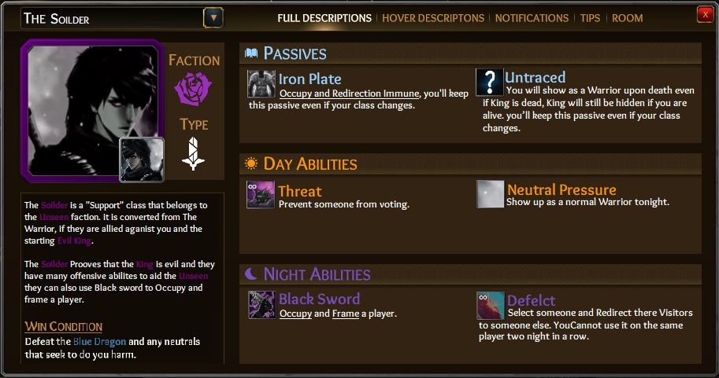

The Warrior Neutral Offensive
Passive(1): Iron Plate, Occupy and Redirection Immune, you’ll keep this passive even if your class changes.
Passive(2): Unknown Findings, Whilst you are alive the King Will show up as Unknown King, You’ll always show up as Neutral. Kings faction will be revealed once you both die, you’ll keep this passive even if your class changes.
Day Ability(1): Iron Armour, Make yourself Immune tonight (2 Uses)
Day Ability(2): Threat, Prevent someone from voting (Infinite)
Night Ability(1): Deflect, Select someone and Redirect there Visitors to someone else.(Cannot use it on the same person twice in a row)
Night Ability(2): Sword of Justice, Kill a player (2 Uses)
*You can Target king.
Goal: Make sure the First King loses.
If the Warrior is against the Unseen King they can be converted into the Soldier.
The Soldier Unseen Offensive
Passive(1): Iron Plate, Occupy and Redirection Immune. you’ll keep this passive even if your class changes. you’ll keep this passive even if your class changes.
Passive(2): Untraced, Will show as a Warrior upon death even if King is dead, King will still be hidden if you are alive. you’ll keep this passive even if your class changes.
Day Ability(1): Neutral Pressure, Show up as a normal Warrior tonight (2 Uses)
Day Ability(2): Threaten, Prevent someone from voting (Infinite)
Night Ability(1): Deflection, Select someone and Redirect there Visitors to someone else. (Infinite)
Night Ability(2): Black Sword, Occupy and frame a player (2 Uses)
Goal: Defeat the blue Dragon and any neutrals that seek you harm.
